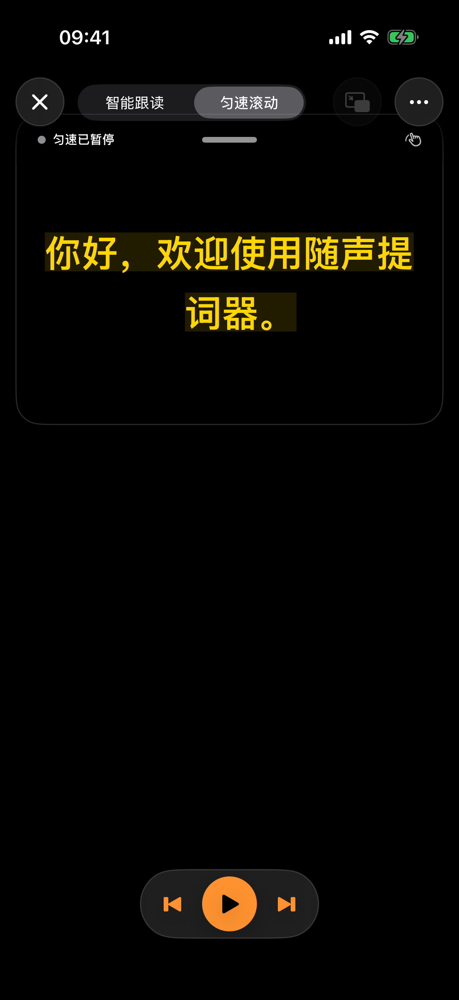
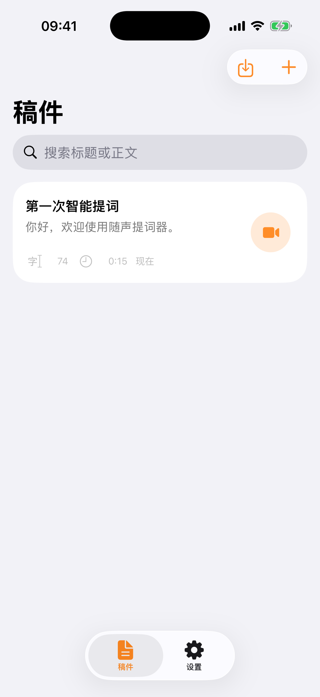

♫
VOICECUE · TELEPROMPTER
Your words. Your pace.
A teleprompter that follows your speech — so you can look at the camera, speak naturally, and focus on your story.
Feature availability depends on device, system version and permissions. VoiceCue is preparing for release.


WHY VOICECUE
Make every take feel natural.
Write or import scripts, practise at your own pace, and record with the cameras your iPhone supports.
◉
Flexible recording
▤
Script library
Aa
Prompt controls
▣
Practice & PiP
✧
Pro upgrades
REAL APP SCREENS